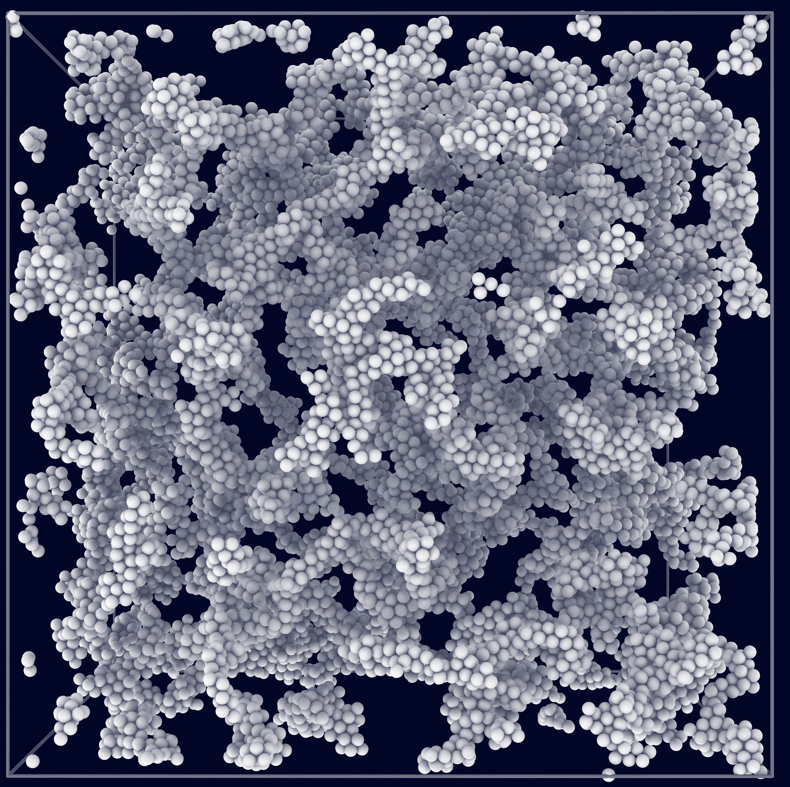

Colloidal Gels: Structure and Mysteries
The equilibrium behaviour of colloidal “sticky spheres” is well understood [2]. Yet out of equilibrium, mysteries remain. Far-from equilibrium, sticky spheres can form a gel, whose solidity is due to rigid minimum energy clusters [3]. As gels age, they stiffen due to coarsening of the gel network [4]. Remarkably, after a period of increasing strength, with no visible macroscopic change, gels undergo delayed catastrophic gravitational collapse.
We can study the microscopic mechanisms of yielding using both experiments and computer simulation [4,5]. We have also developed an experimental system to determine forces between particles, which reveals the local stress tensor [6]. However, such microscopic measures of yielding cannot address the challenge of macroscopic samples which undergo delayed collapse after a period where nothing seems to happen for weeks or even years.
We have developed a new technique to address this needle-in-haystack problem: multiscale confocal microscopy. Here we image an entire bulk sample with microscopic resolution. We reveal the nature of precursors to the sudden collapse. These are channels of solvent which form at the top of the gel, overcome the yield stress and make their way through the bulk of the material. This leads ultimately to a runaway increase in flow rate and gel collapse [7].

References
-
"Complex Plasmas and Colloidal Dispersions: Particle-resolved Studies of Classical Liquids and Solids"
Ivlev A, Löwen, H, Morfill G and Royall CP. World Scientific. (2012). -
Royall CP, Faers MA, Fussell SL and Hallett JE,
"Real Space Analysis of Colloidal Gels: Triumphs, Challenges and Future Directions"
J. Phys.: Condens. Matter, 33 453002 (2021). PDF download. - Royall CP, Williams SR, Ohtsuka, T and Tanaka, H, "Direct observation of a local structural mechanism for dynamical arrest", Nature Materials, 7, 556-561 (2008). PDF download from Nature website.
-
Bhaumik H, Hallett JE, Liverpool TB, Jack RL and Royall CP,
"Cyclically sheared colloidal gels: structural change and delayed failure time"
Soft Matter 21 8555 (2025).
PDF download. -
Thijssen, K, Liverpool TB, Royall CP, Jack RL
"Necking and failure of a colloidal gel arm: signatures of yielding on different length scales"
Soft Matter 19 7412-7428 (2023). link to PDF -
Dong J, Turci F, Jack RL, Faers MA and Royall CP,
"Direct Imaging of Contacts and Forces in Colloidal Gels"
J. Chem. Phys. 156 214907 (2022). link to PDF -
Cheng R, Faers M, Turci F, Mauleon-Amieva A, Liverpool TB, Jack RL and Royall CP,
"Observing the mechanism of delayed collapse in colloidal gels: Yielding while becoming stronger"
Proc. Nat. Acad. Sci. 123 e2528499123 (2026) Link to journal